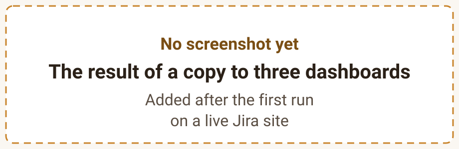

Gadgetferry quick start
Your first copy of a gadget from one Jira Cloud dashboard to another, and how to read the result. Product page. Gadgetferry has not yet run on a live Jira site, so there is no screenshot yet; one is added after the first live run. The install steps and menu names below have not been followed on a live site.
Install
- When the listing is live on the Atlassian Marketplace (it is not yet), a Jira site admin opens Apps > Explore more apps, searches for Gadgetferry and chooses Try it free or Get app.
- Open Apps > Gadgetferry from Jira's top bar. The first time, Jira may ask you to allow Gadgetferry to act as you; allow it and reload the page.
You need edit access to the target dashboard: its owner, or someone it is shared with under Edit permissions. An admin role is not enough on its own, because Jira does not let an admin edit another person's dashboard unless it is shared with them for editing.
1. Choose the source
Type part of a dashboard name in Search dashboards by name, or paste a dashboard link (the form Jira shows today, …/jira/dashboards/10005, and the older form that ends …selectPageId=10005, both work) and press Use this link.
2. Choose the gadget
Select one row. Below the table Gadgetferry lists the settings Jira returns for it by name, with the saved filter it uses named. If Jira lists that filter as shared with nobody but its owner, a warning names it here, before you copy. For Jira's own gadgets it also asks Jira for the usual setting names one by one; settings found that way are marked “found by name”. If Jira holds no settings for the gadget, you see “Jira holds no settings for this gadget; it will arrive unconfigured”: tick Copy it anyway, unconfigured to go on.
3. Choose the targets
Search the dashboards you can edit, or paste a link, and click each to add it: up to 20. Choose the column (1, 2 or 3) and the top or the bottom of it. On a site with many dashboards the list may offer Show more dashboards; typing part of a name or pasting a link is faster.
4. Copy
Press Copy gadget. A count shows how many targets are done. Each target gets a result line with one badge:
- Copied, settings matched: the settings Jira returned for the source read back the same on the copy.
- Copied unconfigured: Jira held no settings for the gadget.
- Copied, settings not copied: the gadget is there, and the settings that did not copy are listed with Jira's reason.
- Added, not finished: the step stopped after the gadget was added; Undo this copy removes it.
- Refused: Jira refused the step. The line names the rule and the way round it, for example: “You can't edit this dashboard. Its owner can add you under Edit permissions, or copy to a dashboard you own.”

5. Check the copy
A matched copy reads: “Copied: N of N settings Jira returned matched on the copy. Open the copy to check its configuration: Jira's list of a gadget's settings can be incomplete.” Open the settings under the result to see each as Matched or Not copied. Click Open this dashboard (it opens in a new tab), find the copied gadget and check its configuration. Matched does not prove the gadget is configured. When a setting names a saved filter, the result names the filter: viewers of the target dashboard see the gadget only if that filter is shared with them, and the result line says when it is shared with nobody but its owner.
6. Undo a copy
Undo this copy under the result, or Undo on a row of “Your recent copies”, removes the gadgets that run added, from every target it reached, and nothing else. The list keeps your last 20 runs. If Jira no longer shows a dashboard to you, its gadget is reported as not removed, the run stays “Partly undone”, and Retry undo tries again.
When Jira's own tools are enough
For a new dashboard from an old one, use Copy dashboard. To repeat a gadget on the same dashboard, use More actions (…) > Duplicate in edit mode.
Limits
- Settings an app's vendor keeps outside Jira are not copied. A Jira gadget with a setting under a name Gadgetferry does not ask for arrives without it, and the result still says Matched for the settings it did copy. Whether a given gadget type arrives configured has not yet been shown on a live Jira site.
- One setting can hold at most 32,768 characters in Jira; a longer one is shown as Not copied and the rest still copy.
- Each target is copied in one step that must finish within Atlassian's 25-second limit; a gadget with very many large settings may stop part-way, and the settings not yet copied are shown as Not copied.
- The copy uses the same saved filter, not a copy of it. Gadgetferry does not move gadgets (copy, then remove the original yourself), copy between Jira sites or keep copies in step. Jira Cloud only.
Privacy
Gadgetferry sends nothing outside Atlassian and has no analytics or tracking. It acts with your own Jira permissions and stores only your run history in Atlassian-hosted app storage. See the privacy policy.
Support
Email support@ochrestack.com with the result line you saw and what you expected. We answer every message, usually within one business day.